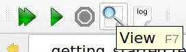
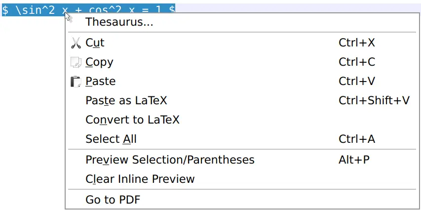
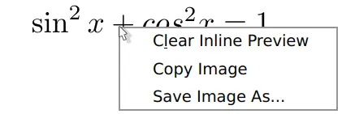
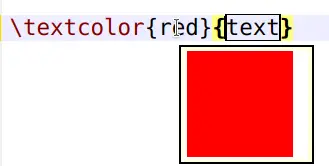
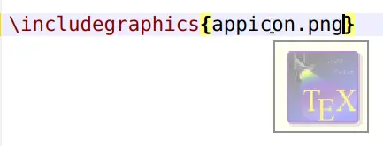

Viewing a document (pdf)¶
Internal pdf viewer¶
TeXstudio has an internal (built-in) pdf viewer that lets you view your
pdf documents. The viewer can be embedded or window-based (in a separate
window). The former uses an area to the right of the editor, the latter
uses its own window and gives the user more options. The viewer can be
opened by clicking the View button or by pressing the F7 key.

Forward and Inverse searching¶
In this section you will not learn how to find a specific text, as you know it from other editors. Searching is different: If you see something in your pdf document that you want to change, then you need to figure out where to change your LaTeX document in the editor (inverse search). Or you want to figure out where your changed text will be displayed in the pdf (forward search).
Note
Make sure that synctex is activated in the pdflatex command (option -synctex=1 needs to be added), though TeXstudio will ask you if it can correct the command itself if it is not set correctly.
Forward search is automatically done every time the pdf-viewer is opened. TeXstudio will jump to the position where your cursor is currently positioned. Additionally you can use CTRL+left mouse button click on a word in the text editor to jump to the pdf or use the context menu and select “Go To PDF”.
Inverse search can be activated by clicking in the pdf with CTRL+left mouse button or by selecting “jump to source” in the context menu, which is activated with a right mouse button click.
Furthermore it is possible to enable “Scrolling follows Cursor” in pdf-viewer/configure. This will keep the pdf-viewer position synchronous to your cursor position in the editor. Likewise “Cursor follows Scrolling” keeps the editor position synchronous to the pdf-viewer position.
Modes and mouse actions¶
You can choose main mode Magnify or Scroll from the toolbar. The mouse cursor used is a magnifier glass or an open hand.

These offer the following actions:
Magnify mode only
left mouse button click opens magnifier showing enlarged part of the text, or follows a link
Shift + left mouse button click increases zoom level
Alt + left mouse button click decreases zoom level
Scroll mode only
left mouse button click grabs the document so you can scroll it around, or follows a link
double left mouse button click opens magnifier showing enlarged part of the text
Shift + left mouse button click sets grid page offset (see Special features)
Magnify and Scroll mode
Ctrl + left mouse button click jumps to the source (inverse search)
Ctrl + Shift + left mouse button click copies coordinates to clipboard (see Special features)
Note
When you set option Presentation (menu View, or key F5), the windowed pdf viewer only uses left and right mouse button click to scroll pages forth and back, and pressing the mouse wheel button changes the cursor into a red laser dot.
With option Full Screen set (menu View, or key Ctrl+Shift+F) the windowed pdf viewer’s behavior is that of Scroll Mode.
The mouse cursor hot spot of the magnifier glass lies in the center of the glass, that of the open hand is marked with a small cross outside the hand. This may help improve accuracy of inverse search.
Changing the grid page offset¶
The windowed pdf viewer arranges the pages in a customizable grid of columns and rows (see menu View/Grid) in which the pages are placed. The first page may be placed on the left in the first row (i.e. a grid page offset of 0) and the following pages fill the row and so on:

A grid page offset of 0 may not be suitable in all cases. For example, if you are working on a book, since books have odd pages on the right. The first page of the document shown in the previous image should be positioned in the second or fourth column (i.e. a grid page offset of 1 or 3). Thus each grid row starts with an even (left) page and ends with an odd (right) page (if appropriate):

To meet this requirement, you can manually change the offset for the first page in any grid. To do this, use Shift + left mouse button click on any place of the grid while in Scroll mode. The first page will be moved to the place that is in the first row and in the same column as the place you selected with the mouse. You may frequently use grid 2x1 with 2 columns to view books. In this case, for the sake of simplicity, the first page is automatically shifted to the right (i.e. an offset of 1 is set).
Hint
When option Single Page Step (menu View/Grid) is set, a manually set grid page offset gets ignored.
Copy page coordinates to the clipboard¶
You can also use the pdf viewer to get the x and y coordinates of a point on a page by performing Ctrl + Shift + left mouse button click (the mouse cursor changes to a cross) at that point. By doing so, the x and y coordinates of the mouse position (in centimeters) with respect to the bottom left corner of the current page are copied into your clipboard.
Example for x, y copied to clipboard: 10.16, 12.8372
This becomes particularly useful when adjusting margins or working with TikZ.
Preview¶
When optimizing small structures visually like tables or formulas, various compilation runs may be necessary to reach a final state. Compiling a large document may take longer, so that is inconvenient for these tasks.
TeXstudio offers a preview for this circumstance.
The preview can either be inline, i.e. right below the previewed text, as tooltip, in the preview pane or in the embedded pdf viewer.
The selection is done in the configuration or in the submenu of main menu Idefix/Preview Display Mode.
Inline Preview¶
The inline preview is started by selecting the interesting text and then pressing Alt+p or using the context menu on the selection. An inline preview can be closed with the context menu (right-click) on the preview.



Tooltip preview¶
A tooltip is created when hovering over the delimiters like $ of a formula.
It takes a moment until the preview can be presented as it is compiled when the preview is started.
The preview is also available for colors and images.


